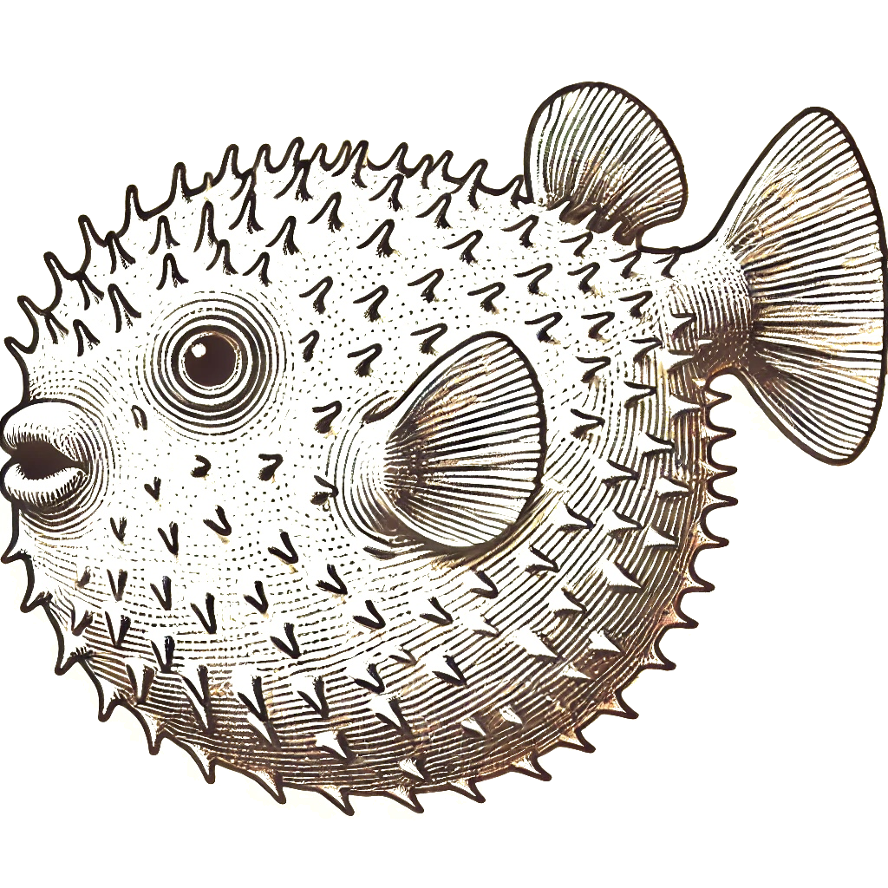

yes you can have a machine
just use ssh
ssh exe.dev
EXE.DEV gives you machines over ssh. no cloud cruft.

HTTPS done for you
auth proxy by default
ssh exe.dev create --name=bip
ssh bip@exe.dev
ssh bip@exe.dev
make a new machine with persistent disk
your ssh key is your passport
ssh bip@exe.dev py -m http.server 80 &
curl https://bip.yourteam.exe.dev
curl https://bip.yourteam.exe.dev
HTTPS done for you
<name>-<port>. to anything
ssh exe.dev route bip:/dropbox public
share what you want
ssh exe.dev
sign up now, in your terminal